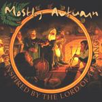

| Artist: | Mostly Autumn |
| Title: | The Lord Of The Rings |
| Label: | Classic Rock Legends Ltd CRL0854 |
| Length(s): | 52 minutes |
| Year(s) of release: | 2001 |
| Month of review: | [05/2002] |
| 1) | Overture - Forge Of Sauron | 4.08 |
| 2) | Greenwood The Great | 5.26 |
| 3) | Goodbye Alone | 6.53 |
| 4) | Out Of The Inn | 5.21 |
| 5) | On The Wings Of Gwaihir | 5.05 |
| 6) | At Last To Rivendell | 3.39 |
| 7) | Journey's Thought | 4.33 |
| 8) | Caradhras The Cruel | 2.32 |
| 9) | The Riders Of Rohan | 3.34 |
| 10) | Lothlorien | 3.44 |
| 11) | The Return Of The King | 3.20 |
| 12) | To The Grey Havens | 3.30 |
Greenwood The Great is a rustic ballad with aocustic guitar and cello. The female vocals are a bit hoarse, but always beautiful. Halfway the theme of the overture returns on piano and cello now. Again, the band uses the melody well to let the music bring on a mood of tension and yes the music breaks loose into a hell of a guitar solo accompanied by organ. Great epic stuff. It is almost as if the guitarist is strangling his guitar.
On Goodbye Alone we hear piano in the opening, after which the acoustic guitar starts strumming and the violin wails somewhat romantically around the sound of a recorder. The vocals this time are Josh's, very low. Notwithstanding the easy-going gait, the guitar solo at the end is a powerful, emotional one.
The folk influences abound on Out Of The Inn with its percussive feel, strumming acoustic guitar and folky melodies. Halfway the song takes a turn for the active with the electric guitar barging in, the melodies taking on an Arabic tint.
On The Wings Of Gwaihir has a Floydian feel, not so strange in view of the bands previous albums. Reverberating guitar/bass, gusts of wind make for an atmospheric, somewhat eerie opening. Again, the song harbours a strong theme played on percolating guitar supported by a brimming organ.
At Last To Rivendell opens with playful piano, the theme replayed later on flute with acoustic guitar and percussion doing the backing. Again, a memorable merry theme, which does not belie the folky background of the band. With Journey's Thought the music becomes quite sombre. A dark feel pervades the slowly evolving music. The vocals are typically Floydian.
Caradhras The Cruel is a harsh track with vocoded vocals by Josh. An active track, which winds down for the parts where Heather sings. On The Riders Of Rohan, the piano rides again with some really nice themes. A rather accessible vocal part here, as was also sometimes present on their first two albums (Winter Mountain for instance). An up-beat track in which the percussion is a bit too overt in the mix. The piano is nicely present throughout and the guitar adds an epic feel.
We now visit Lothlorien, a peaceful ballad with acoustic guitar and a well crafted vocal melody. After this, The Return Of The King, opens with loud spaceous guitars. This is particularly rousing track, with a dreamy middle part, after which the music plods on again.
With To The Grey Havens we conclude the regular album. This is a somewhat Floydian carefully opening track. On a tapestry of keyboards, the aocustic guitar softly wails and cries.
As an extra, you obtain the enhanced video track of Helm's Deep, the song inspired by the Lord of the Rings which was already on The Last Bright Light.
Productionwise, I found the album not up to the standard of the previous album. This was most notable in the mix, where the percussion was not always how would have liked to have heard it. Also, in songs like The Return Of The King, I feel more could have been done with the excellent song material. However, these are minor complaints.